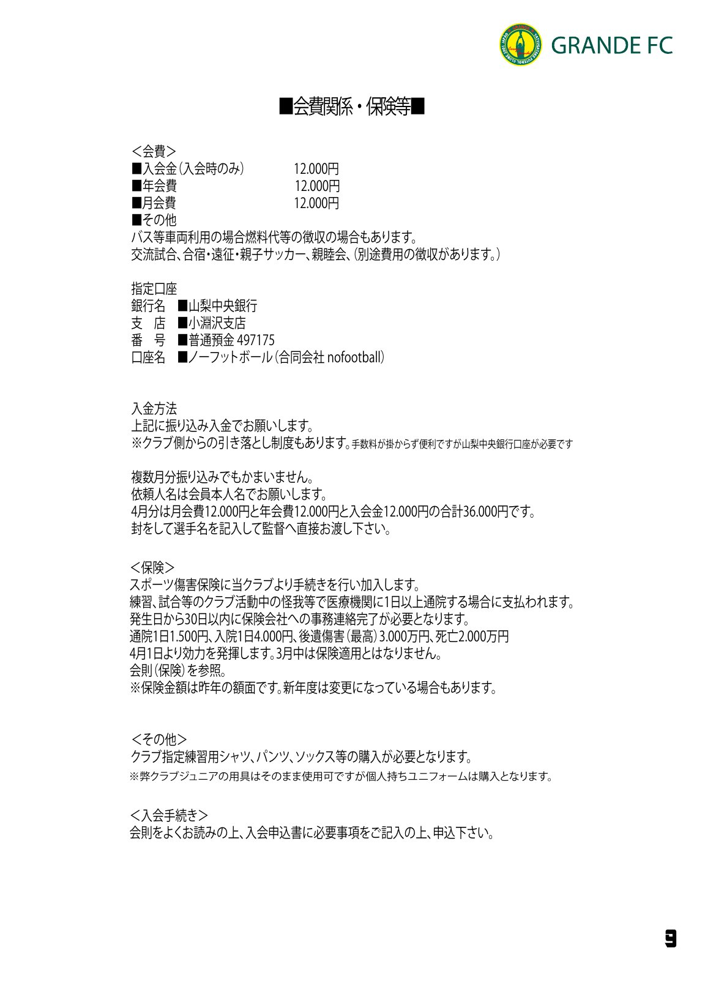
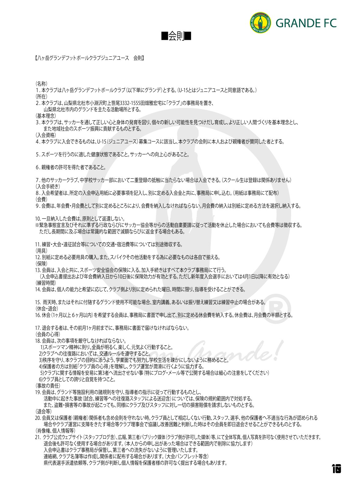
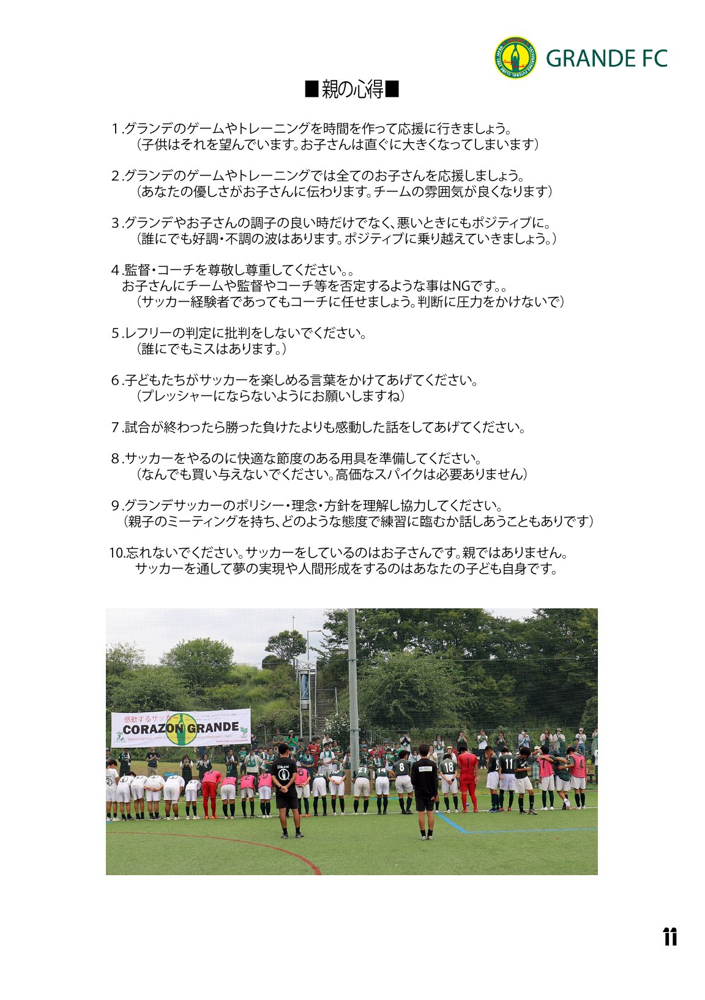
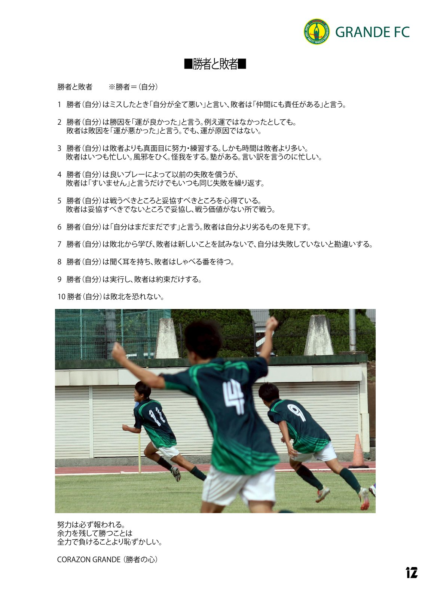

クラブの規則・会費・保護者向け資料をまとめています。画像はタップで拡大表示、PDFボタンから保存・印刷ができます。
01会費関係・保険等

入会金・年会費・月会費のご案内と指定口座・入金方法、スポーツ傷害保険の内容、入会手続きについてまとめた資料です。
- 会費(入会金・年会費・月会費)と振込先のご案内
- スポーツ傷害保険の補償内容と手続きの流れ
- クラブ指定用具・入会手続きについて
02会則

八ヶ岳グランデフットボールクラブ(ジュニアユース)の会則です。入会前に必ずお読みください。
- クラブの名称・所在・基本理念
- 入会資格・入会手続き・会費・保険
- 練習時間・休会/退会・会員の心得・個人情報の取り扱いなど全21条
03親の心得

保護者の皆さまへ、お子さんの応援にあたってお願いしたい10か条です。
- すべての子どもたちを応援すること、良い時も悪い時もポジティブに
- 監督・コーチ・レフリーへの尊重
- 主役はお子さん自身であること
04勝者と敗者

「勝者(自分)」の心構えを説いた10か条。選手たちに大切にしてほしい考え方です — CORAZON GRANDE(勝者の心)。
- ミスや敗北への向き合い方
- 努力・実行・学び続ける姿勢
- 「努力は必ず報われる」